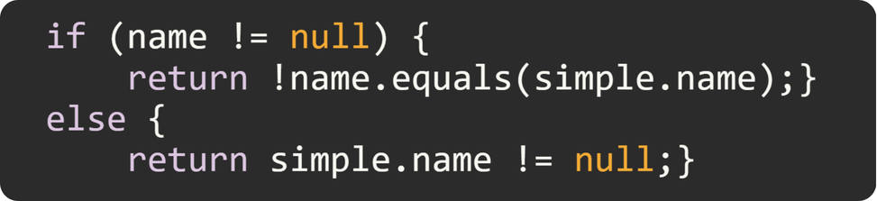
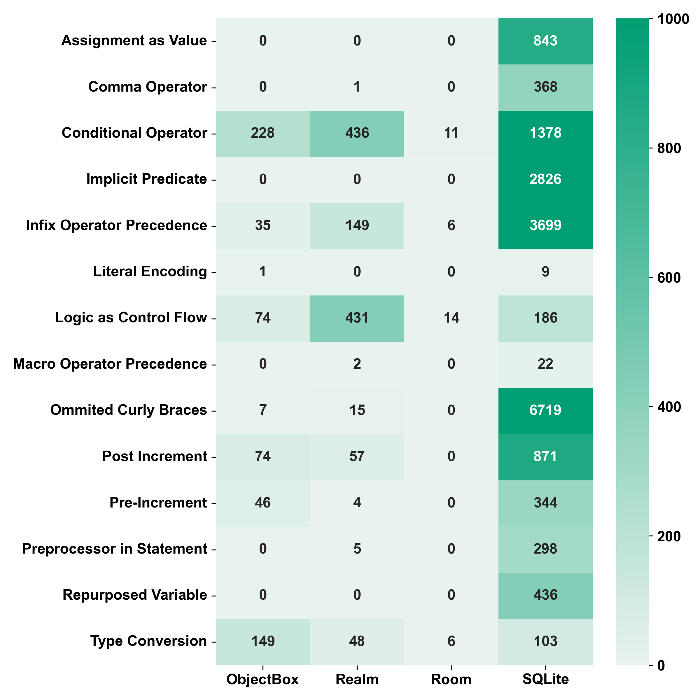
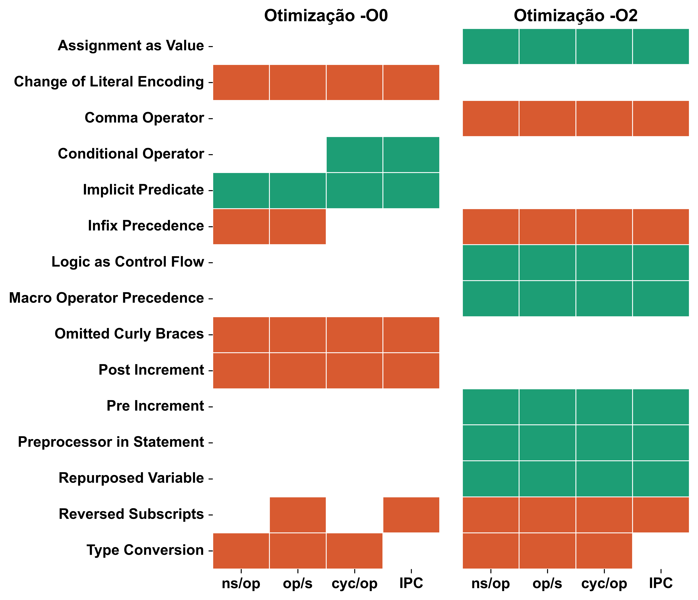
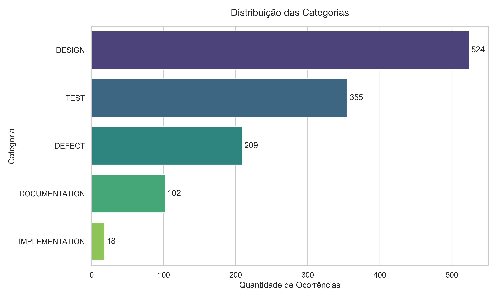

Abstract
Program comprehension is a major challenge in software engineering, consuming approximately 58% of developers' time. This difficulty is exacerbated by "Atoms of Confusion" (ACs), specific code microstructures that reliably induce human interpretation errors and are highly prevalent in critical systems. Recent evidence suggests that Large Language Models (LLMs) also exhibit processing uncertainty when encountering ACs, closely mirroring human cognitive struggles. As AI-assisted software development becomes ubiquitous, it is vital to determine whether LLMs can mitigate these semantic traps or if they inadvertently replicate them. This research empirically evaluates the capacity of state-of-the-art LLMs to identify, refactor, and analyze ACs in C and Java source code. Through structured prompt engineering, we assess the models' ability to semantically distinguish confusing code, investigate whether AI-driven verbosity reduction introduces new technical debt, and evaluate their potential to predict underlying logical vulnerabilities within confusion hotspots. The methodology benchmarks LLM performance against traditional static analysis tools and validates AI-refactored code using execution micro-benchmarks. By expanding the theory of ACs into the artificial intelligence domain, this study aims to inform the design of reliable, AI-driven code review tools, ultimately reducing cognitive technical debt and improving the resilience of software infrastructures.
1. Introduction
Context
- Program Comprehension is a central challenge in software engineering, consuming approximately 58% of developers’ time compared to developing new features [3].
- Atoms of Confusion (ACs): are code microstructures that induce human interpretation errors, exhibiting high propagation in critical systems (e.g., 70% in SQLite) [2].
- Recent evidence reveals that code regions with ACs cause higher processing uncertainty in Large Language Models (LLMs), correlating directly with human neurophysiological responses associated with confusion in code comprehension tasks [1].
- While static analysis tools (e.g., BOHR, Atom Finder) can detect ACs, they lack deep semantic analysis. With the rise of AI-assisted development, it is crucial to determine whether LLMs accurately capture the programmer's intent or if they replicate these same cognitive traps.
Objectives
- Identify & Refactor: Evaluate the efficiency of LLMs in semantically identifying and refactoring ACs.
- Measure Debt: Investigate whether AI optimization or verbosity reduction introduce new ACs.
- Predict Bugs: Assess the capability of LLMs to predict underlying logical bugs and vulnerabilities derived from these confusion hotspots.
What is an Atom of Confusion? (Example)
A classic example of the Conditional Operator pattern, which forces the reader to simultaneously evaluate multiple conditions instead of following a clear branching logic:
❌ Confusing Version (AC)
✅ Refactored Version (Clean)

Research Questions (RQs)
- RQ1: To what extent can LLMs identify ACs and distinguish them from semantically equivalent, clean code?
- RQ2: Do LLMs introduce new ACs when tasked with optimizing, refactoring, or reducing the verbosity of clean code?
- RQ3: Does the presence of ACs help LLMs detect underlying logical flaws in source code?
Expected Results & Impact
- Theoretical Impact: Expands AC theory by demonstrating that these microstructures impair both human and machine code comprehension.
- Practical Impact: Guides the design of context-aware, AI-driven code review tools to help mitigate cognitive technical debt.
2. Methodology
1. Dataset Construction
C and Java snippets pre-analyzed by BOHR and AtomFinder.
2. Prompt Engineering
Structured prompts tailored for models like GPT, Claude, and Gemini.
3. Experimental Execution
Evaluate LLMs on direct AC classification and vulnerability prediction.
4. Empirical Validation
Execution of micro-benchmarks on AI-refactored code to ensure semantic preservation.
5. Statistical Analysis
Precision, recall, and hypothesis testing against static tool baselines.
3. Preliminary Results
Dataset Construction: Android Data Persistence Libraries
This foundational dataset was built for the SBES 2026 paper "Unveiling Confusion in Android Data Persistence Libraries", establishing the extraction methodology for our LLM evaluations. It investigates the prevalence, evolution, and performance impact of ACs across four major ecosystems: SQLite, Room, Realm, and ObjectBox.
- Prevalence (Study 1): Mapped Java and C/C++ codebases using BOHR and AtomFinder, revealing that modern Java implementations exhibit lower AC propagation (~20%), whereas SQLite's native C core presents widespread contamination (~70% of files).
- Evolution (Study 2): Tracked SQLite stable releases over a decade (2015–2025), demonstrating a strong correlation between codebase growth and the continuous accumulation of ACs.
- Performance (Study 3): Executed controlled C/C++ micro-benchmarks (via Nanobench and Valgrind), indicating that most confusing constructs do not provide significant computational or memory benefits, challenging the assumption that concise code is inherently faster.

View Dataset RepositoryPerformance Analysis of ACs in C/C++
This study introduces the Atoms of Confusion Benchmark Suite to answer a fundamental question: does structural confusion in code result in performance penalties for the machine, or is it merely a cognitive burden for the programmer?
- Experimental Design: Evaluated 15 pairs of semantically equivalent C implementations (confusing vs. clean code) compiled under GCC -O0 and -O2 optimization levels.
- Memory & Hardware Utilization: Memory footprint analysis using Valgrind revealed that memory reads, writes, L1 cache misses, and branch counts remained completely invariant across all evaluated patterns.
- Execution Time & Efficiency: CPU profiling via Nanobench showed that all 15 ACs produced statistically significant differences in execution metrics like ns/op and IPC, particularly under -O2 optimization.
- The Clarity vs. Efficiency Trade-off: The assumption that concise, confusing code is inherently faster was refuted. In 8 of the 15 evaluated cases, the refactored clean version performed equally well or better than its confusing counterpart, reinforcing the recommendation for systematic AC removal in most contexts.

View Benchmark SuiteAI-Driven Technical Debt Detection in Java
This project implements an automated methodology combining static code analysis and Large Language Models (LLMs) to detect Self-Admitted Technical Debt (SATD). This infrastructure serves as the technical foundation for our planned evaluation of Atoms of Confusion (ACs).
- AST Parsing: Utilizes the
tree-sitterlibrary to generate abstract syntax trees (AST) of Java files, enabling the precise extraction and contextual mapping of code structures. - LLM Inference: Integrates the Gemini API via Few-Shot Learning prompts, ensuring the model classifies code based on strict, scientifically accepted taxonomies.
- Adaptation for ACs: The resilient, checkpoint-based pipeline built for SATD classification will be directly adapted to query state-of-the-art LLMs on their ability to semantically identify, refactor, and analyze ACs across large datasets.

View Detection Tool